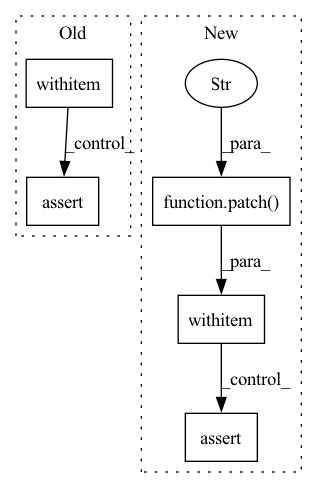

Pattern ID :25185
Before Change
ml_runner_with_container.setup()
assert not ml_runner_with_container.checkpoint_handler.has_continued_training
with patch ("health_ml.run_ml.create_lightning_trainer") as mock_create_trainer:
with patch.multiple(
ml_runner_with_container,
checkpoint_handler=mock.DEFAULT,
load_model_checkpoint=mock.DEFAULT,
run_training=mock.DEFAULT,
run_validation=mock.DEFAULT,
run_inference=mock.DEFAULT,
) as mocks:
mock_create_trainer.return_value = MagicMock(), MagicMock()
ml_runner_with_container.run()
// Checkpoints will only be loaded explicitly when doing training. Checkpoint loading is guarded
// also by checking if the model has a custom test step, this is always True for the HelloWorld model used
// here.
assert ml_runner_with_container.container.has_custom_test_step()
assert mocks["load_model_checkpoint"].called != run_inference_only
assert ml_runner_with_container._has_setup_run
assert ml_runner_with_container.checkpoint_handler.has_continued_training != run_inference_only
assert mocks["run_training"].called != run_inference_only
assert mocks["run_validation"].called == (not run_inference_only and run_extra_val_epoch)
mocks["run_inference"].assert_called_once()
After Change
ml_runner_with_container.setup()
assert not ml_runner_with_container.checkpoint_handler.has_continued_training
with patch("health_ml.run_ml.create_lightning_trainer" , return_value=(MagicMock(), MagicMock())) :
with patch.multiple(
ml_runner_with_container,
checkpoint_handler=mock.DEFAULT,
run_training=mock.DEFAULT,
run_validation=mock.DEFAULT,
run_inference=mock.DEFAULT,
after_ddp_cleanup=mock.DEFAULT,
) as mocks:
ml_runner_with_container.run()
assert ml_runner_with_container.container.has_custom_test_step()
assert ml_runner_with_container._has_setup_run
assert ml_runner_with_container.checkpoint_handler.has_continued_training != run_inference_only
assert mocks["run_training"].called != run_inference_only
assert mocks["after_ddp_cleanup"].called != run_inference_only
assert mocks["checkpoint_handler"].additional_training_done.called != run_inference_only
mocks["run_validation"].assert_called_once()
mocks["run_inference"].assert_called_once()
In pattern: SUPERPATTERN
Frequency: 3
Non-data size: 5
Instances Fragment ID: 77000572
Project Name: microsoft/hi-ml
Commit Name: 3d632766440a7856712cb0ba40ee6f5cac9fd5c1
Time: 2023-01-18
Author: 37396332+kenza-bouzid@users.noreply.github.com
File Name: hi-ml/testhiml/testhiml/test_run_ml.py
M Class Name: AnonimousClass
N Class Name: AnonimousClass
M Method Name: test_run(3)
N Method Name: test_run(3)
M Parent Class:
N Parent Class:
M File Name: hi-ml/testhiml/testhiml/test_run_ml.py
N File Name: hi-ml/testhiml/testhiml/test_run_ml.py
M Start Line: 299
M End Line: 320
N Start Line: 360
N End Line: 377
Before Change
ml_runner_with_run_id.container.max_num_gpus = 0
ml_runner_with_run_id.container.max_epochs += 10
assert ml_runner_with_run_id.checkpoint_handler.trained_weights_path
with patch .multiple(ml_runner_with_run_id, run_validation=mock.DEFAULT, run_inference=mock.DEFAULT) as mocks:
ml_runner_with_run_id.run()
assert mocks["run_validation"].called == run_extra_val_epoch
mocks["run_inference"].assert_called_once()
After Change
ml_runner_with_run_id.container.max_epochs += 10
assert ml_runner_with_run_id.checkpoint_handler.trained_weights_path
mock_trainer = MagicMock()
with patch("health_ml.run_ml.create_lightning_trainer" , return_value=(mock_trainer, MagicMock())) :
with patch.object(ml_runner_with_run_id.container, "get_checkpoint_to_test") as mock_get_checkpoint_to_test:
with patch.object(ml_runner_with_run_id, "run_inference") as mock_run_inference:
with patch.object(ml_runner_with_run_id, "after_ddp_cleanup") as mock_after_ddp_cleanup:
mock_get_checkpoint_to_test.return_value = MagicMock(is_file=MagicMock(return_value=True))
ml_runner_with_run_id.run()
mock_after_ddp_cleanup.assert_called_once()
mock_get_checkpoint_to_test.assert_called_once()
assert mock_trainer.validate.called == run_extra_val_epoch
mock_run_inference.assert_called_once()
Fragment ID: 77000573
Project Name: microsoft/hi-ml
Commit Name: 3d632766440a7856712cb0ba40ee6f5cac9fd5c1
Time: 2023-01-18
Author: 37396332+kenza-bouzid@users.noreply.github.com
File Name: hi-ml/testhiml/testhiml/test_run_ml.py
M Class Name: AnonimousClass
N Class Name: AnonimousClass
M Method Name: test_resume_training_from_run_id(2)
N Method Name: test_resume_training_from_run_id(2)
M Parent Class:
N Parent Class:
M File Name: hi-ml/testhiml/testhiml/test_run_ml.py
N File Name: hi-ml/testhiml/testhiml/test_run_ml.py
M Start Line: 352
M End Line: 357
N Start Line: 414
N End Line: 426
Before Change
container.run_extra_val_epoch = True
runner = MLRunner(experiment_config=experiment_config, container=container)
with patch.object(container, "get_data_module"):
with patch ("health_ml.run_ml.create_lightning_trainer") as mock_create_trainer:
runner.setup()
mock_create_trainer.return_value = MagicMock(), MagicMock()
runner.init_training()
with patch.object(runner, "validate_model_weights") as mock_validate_model_weights:
runner.run_validation()
mock_validate_model_weights.assert_called_once()
latest_message = caplog.records[-1].getMessage()
assert "Hook `on_run_extra_validation_epoch` is not implemented by lightning module." in latest_message
def test_run_inference(ml_runner_with_container: MLRunner, tmp_path: Path) -> None:After Change
runner.checkpoint_handler.additional_training_done()
runner.container.outputs_folder.mkdir(parents=True, exist_ok=True)
with patch.object(container, "get_data_module"):
with patch("health_ml.run_ml.create_lightning_trainer" , return_value=(MagicMock(), MagicMock())) :
with patch.object(runner.container, "get_checkpoint_to_test") as mock_get_checkpoint_to_test:
mock_get_checkpoint_to_test.return_value = MagicMock(is_file=MagicMock(return_value=True))
runner.init_inference()
runner.run_validation()
latest_message = caplog.records[-1].getMessage()
assert "Hook `on_run_extra_validation_epoch` is not implemented" in latest_message
def test_run_inference(ml_runner_with_container: MLRunner, regression_datadir: Path) -> None: Fragment ID: 77000569
Project Name: microsoft/hi-ml
Commit Name: 3d632766440a7856712cb0ba40ee6f5cac9fd5c1
Time: 2023-01-18
Author: 37396332+kenza-bouzid@users.noreply.github.com
File Name: hi-ml/testhiml/testhiml/test_run_ml.py
M Class Name: AnonimousClass
N Class Name: AnonimousClass
M Method Name: test_model_extra_val_epoch_missing_hook(1)
N Method Name: test_model_extra_val_epoch_missing_hook(1)
M Parent Class:
N Parent Class:
M File Name: hi-ml/testhiml/testhiml/test_run_ml.py
N File Name: hi-ml/testhiml/testhiml/test_run_ml.py
M Start Line: 232
M End Line: 244
N Start Line: 303
N End Line: 316